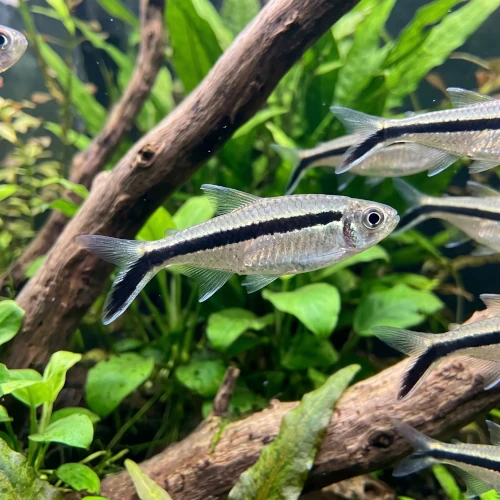

Nome popular principal
Tetra Pinguim
Tetra Pinguim, Tetra-Pinguim, Penguin Tetra, Peixe-Pinguim
Ficha de peixe
Tetras e Caracídeos
Um tetra de nadar peculiar e estampa marcante que adiciona movimento dinâmico e elegância aos níveis médio e superior do aquário.

Nome popular principal
Tetra Pinguim, Tetra-Pinguim, Penguin Tetra, Peixe-Pinguim
Nome científico
Nome técnico essencial para taxonomia, cruzamento de manejo e referência editorial consistente.
Dificuldade de manejo
Use este nível como referência inicial, sempre considerando volume, estabilidade e compatibilidade do aquário.
Seção 1
Seção 2
Seções 4 a 6
Tetra Pinguim tem hábito alimentar onívoro. Excelente. 1 a 2 vezes ao dia. Alimenta-se com entusiasmo de rações em flocos ou pequenos grânulos que flutuem no meio da água, suplementados com dáfnias e artêmias.
Fêmeas adultas são ligeiramente maiores e apresentam o abdômen visivelmente mais arredondado; machos são mais esguios. Tipo de reprodução: Ovíparo. Dificuldade de reprodução: Intermediário. A desova ocorre entre vegetação densa em ambiente de iluminação fraca, sendo altamente recomendada a separação dos pais após a postura dos ovos.
Alta. Substrato recomendado: Substrato escuro ou areia fina de rio. Necessidade de esconderijos: Média. Exibe lindo destaque visual em aquários com fundo escuro, boa densidade de plantas laterais e espaço aberto para nado no centro.
Seção 7
Resistente e adaptável a uma ampla variação de parâmetros, desde que a água se mantenha bem filtrada e estável.
Seção 8
Esse comportamento oblíquo (cerca de 45°) é uma característica natural e anatômica da espécie, não sendo sinal de doença ou problema na bexiga natatória.
Recomenda-se manter um cardume de no mínimo 6 a 8 indivíduos para garantir o bem-estar e o comportamento gregário.
Adapta-se muito bem a uma faixa ampla de PH, preferindo água entre levemente ácida e neutra (6.0 a 7.2).